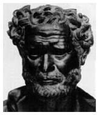

Ηράκλειτος

Ο Ηράκλειτος έδινε μεγάλη σημασία στον "πόλεμο". Υποστήριζε συγκεκριμένα ότι "ο πόλεμος είναι ο πατέρας των πάντων και βασιλιάς των πάντων· από την μια πλευρά ξεχώρισε θεούς, από την άλλη ανθρώπους· άλλους τους έκανε δούλους και άλλους ελεύθερους".
Ο πόλεμος όμως για τον Ηράκλειτο δεν περιορίζεται στη σύγκρουση μεταξύ ανθρώπων και θεών, αλλά δηλώνει, γενικότερα, την αντιπαράθεση που υπάρχει μεταξύ των πραγμάτων στον κόσμο. "Πρέπει να ξέρουμε", σημειώνει ο Ηράκλειτος, "'οτι ο πόλεμος είναι κοινός σε όλα ... και πως τα πάντα λαμβάνουν την ύπαρξή τους με την έριδα και παρέρχονται με την έριδα". Η αντίθεση μεταξύ των πραγμάτων στον κόσμο συντηρείται, καθώς διαρκώς το ένα επιζητεί να κυριαρχήσειπάνω στο άλλο. Έτσι ο πόλεμος εκφράζει τη συνεχή και αδιάλειπτη ανησυχία, την αέναη κίνηση, την ασταμάτητη μεταβολή των πραγμάτων του κόσμου, ο οποίος, έχοντας προέλθει από το αρχέγονο πυρ, τείνει να καταλήξει σ' αυτό πάλι, μέσα από μια κυκλική πορεία που υπαγορεύεται από το λόγο, την ειμαρμένη ή τη δίκη.
Κατά τον Ηράκλειτο, τίποτα στο σύμπαν όπως αυτό υφίσταται, δε μένει σταθερό, αμετάβλητο. "Τα πάντα ρει", είναι η βασική φράση που αποδίδεται σ' αυτόν. Την ασταμάτητη ροή που υπάρχει στον κόσμο ο Ηράκλειτος επιχείρησε να την αναπαραστήσει με εικόνες όπως: "δεν μπορείς να μπεις δύο φορές στο ίδιο ποτάμι, γιατί το ρεύμα ολοένα κυλάει και άλλα νερά πάνω μας" ή "κάθε μέρα είναι και ένας καινούριος ήλιος".